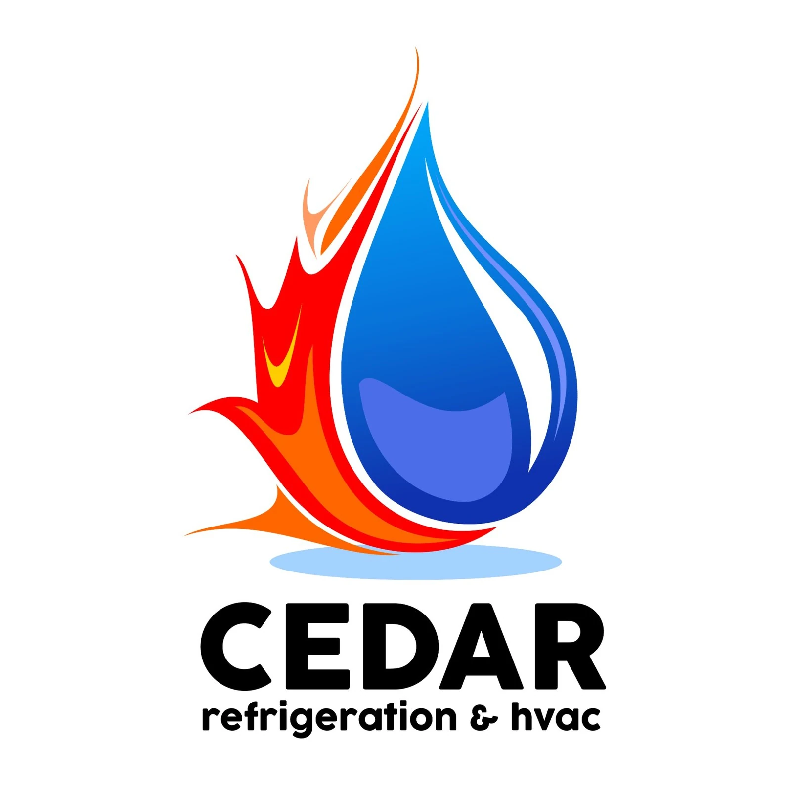
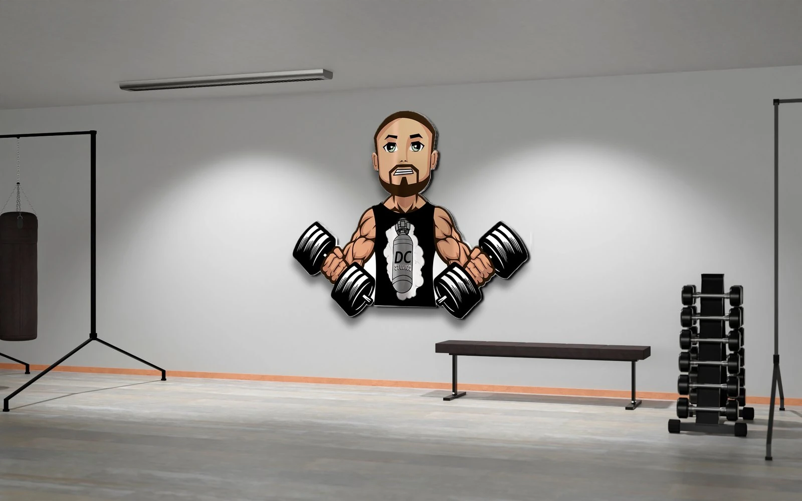
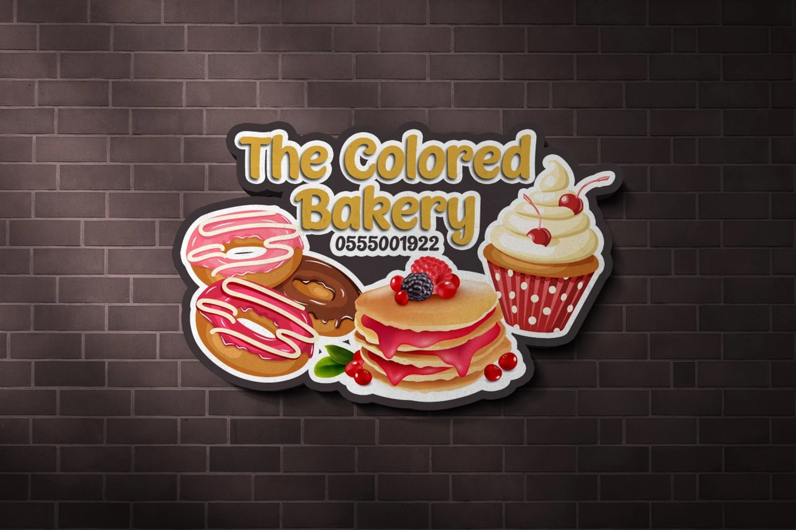
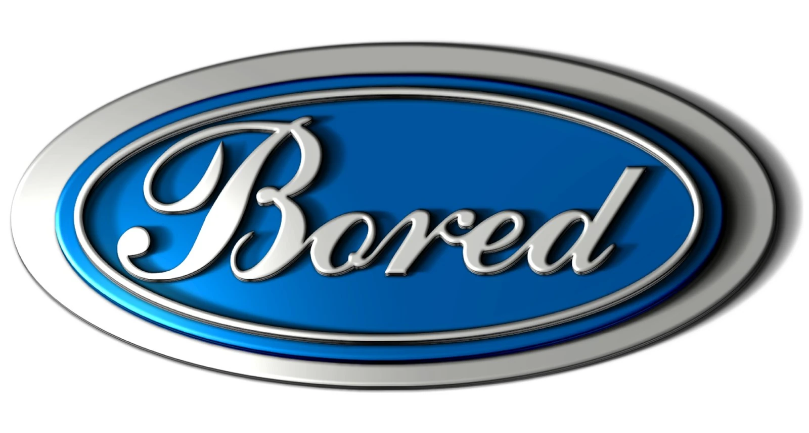

Selected Identities
Different brands need different personalities.
These projects show a broader range of identity work, from service and medical brands to fitness, food and more expressive logo directions.

Work Smart Media
A professional identity shown in exterior signage, where the mark has to stay clear at a larger scale.
Mirin Medical
A cleaner medical identity with a softer visual treatment, shown on an embroidered-style application.

Cedar Refrigeration & HVAC
A service-business mark that brings heating and cooling cues together in one compact symbol.

DC Studios
A more energetic, character-led direction designed to feel at home in a fitness environment.

The Colored Bakery
A playful bakery identity using illustrated sweets and brighter visual cues to give the brand more personality.

Bored
A script-led logo exploration with a more expressive, polished finish.